风格化草地树木的实现
概述
很早就想尝试风格化渲染，正好看到了一个使用Blender的教程，顺便就试了一下，移植到Unity上。
草地
先看草地，概括原版教程
Blender
- 首先创建单株草Mesh,
- 利用Blender中的几何节点，在平面上随机分布草Mesh
- 预生成不同层级的颜色贴图，用于在平面上赋予草颜色
- 利用同一张贴图，当作高度图，生成法线，同样按照世界坐标UV来采样，给每个草Mesh都加上法线
- 最后用简单的lambert光照模型来渲染，lerp下颜色，阴影地方给个深色来模拟阴影
- 然后是风的动画，用顶点偏移，采样了两次噪声，一次频率低，模拟风浪，一次频率高，模拟草叶的抖动
- 因为风倒伏大的地方会有阴影，所以在风浪的地方，给个深色来模拟阴影
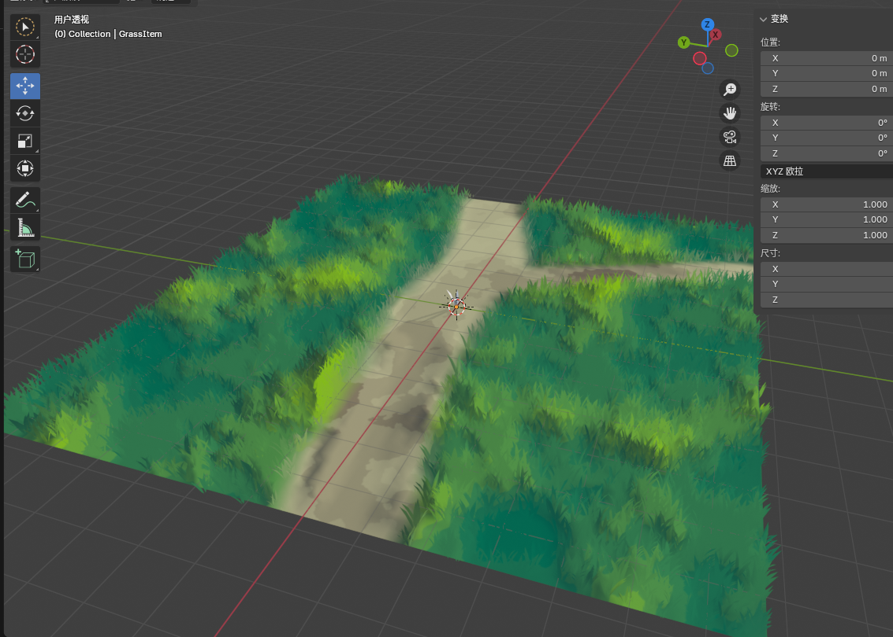
Unity
重点来看Unity的实现
草
首先是导出草的mesh。这里为了之后处理风，给mesh加上了UV。
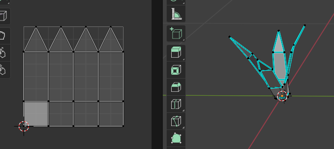
在Unity6中，地形上的草地是用GPU实例化的，所以我们可以直接把草的mesh放到地形上，使用GPU实例化来渲染。
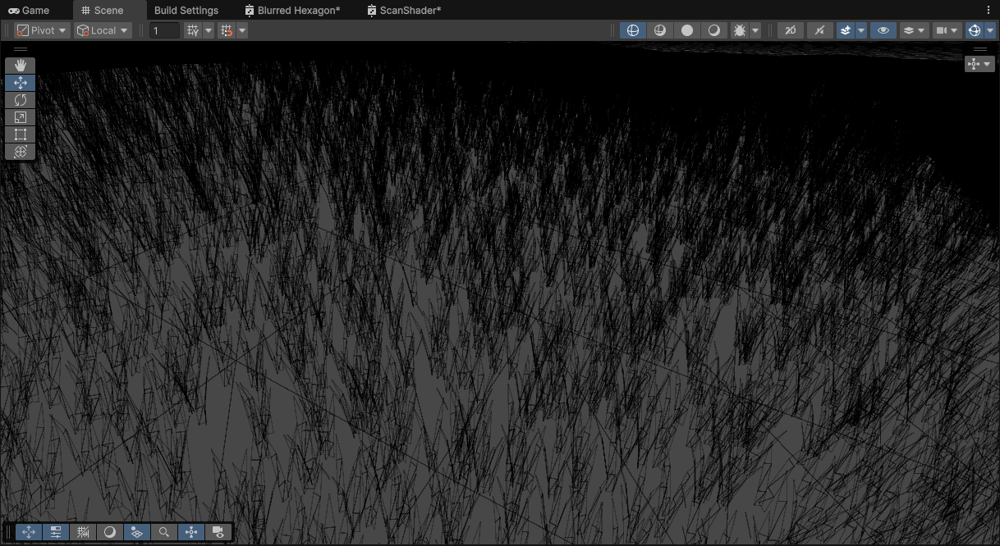
然后是渲染了。
首先准备预渲染的贴图。
这里本来想程序化生成的，但后续再用程序化的贴图取计算法线，需要模糊，采样消耗比较高，所以还是在预处理下。
首先是一张类似高度图的用来颜色分级的贴图
然后把这张图再模糊一下，当作高度图来用。
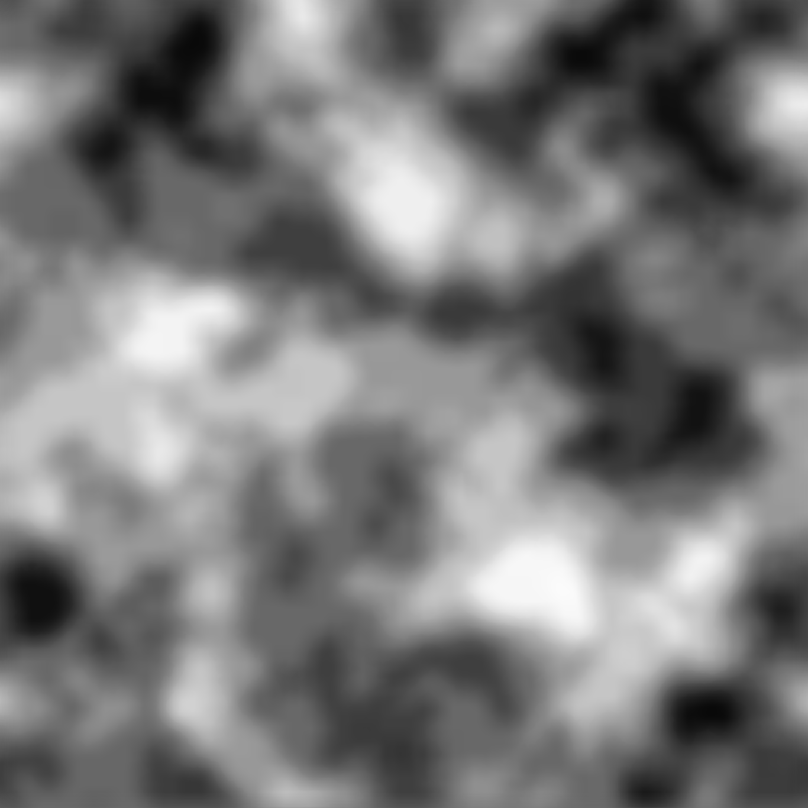
这里直接用Unity从高度图生成法线的功能，直接生成法线贴图。
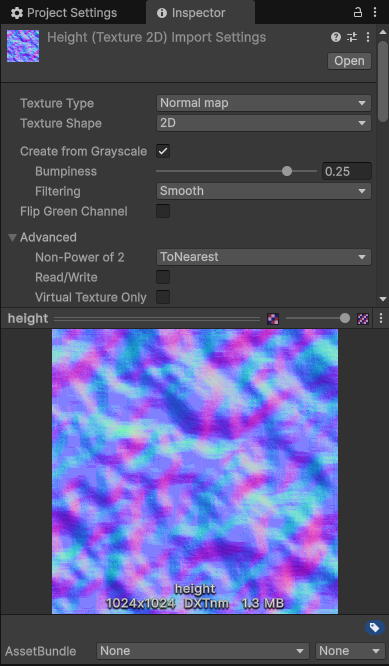
然后就ShaderGraph一通连连看，
首先是颜色
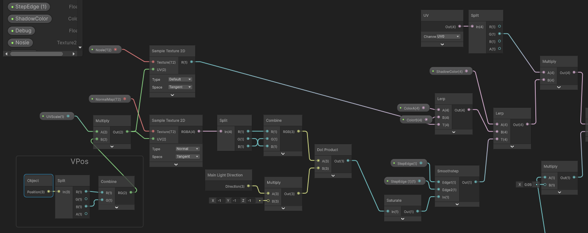
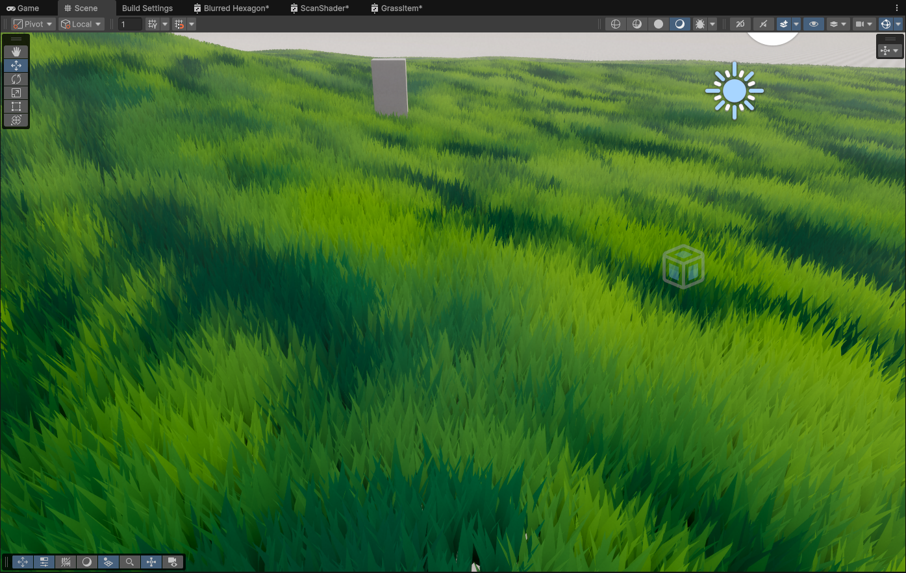
然后是顶点动画
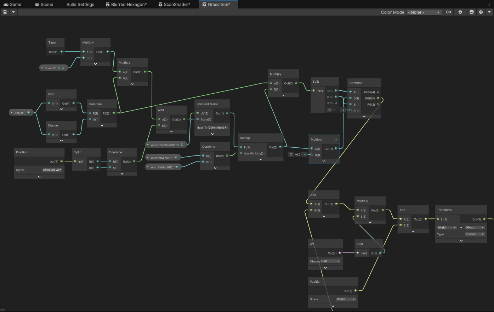

改进
这里的散布是使用的Unity的地形，后续剔除、hiz等不好实现了，最好改用ComputeShader来实现。
然后是法线完全取决于预先生成的贴图，不能根据刷的疏密来动态调整。
草的颜色这里是用的中心点位置来采样的，
树
然后来看看树
Blender
总体思路是用球体来模拟一簇树叶。
在球体基础上，使用几何节点，放置若干密度的面片，然后面片使用广告牌，每个面片依照球体上的位置来充当法线，
然后用lambert光照模型来渲染，用得到的颜色来分级采样预定的色带，每个面片再采样预先绘制的贴图充当alpha，再裁切一下就行了。
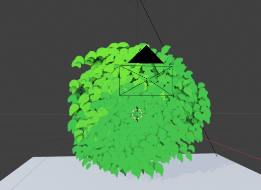
Unity
这里有多种实现方式，首先是最灵活的，用VFX来实现（普通的Cpu粒子应该也行）
这里就没必要局限于球体了，可以采样任意Mesh。
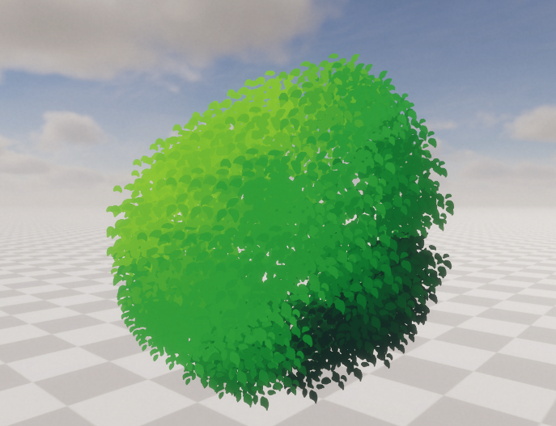
粒子图很简单，就采样Mesh的位置和法线，传给粒子，最后渲染要面向相机。
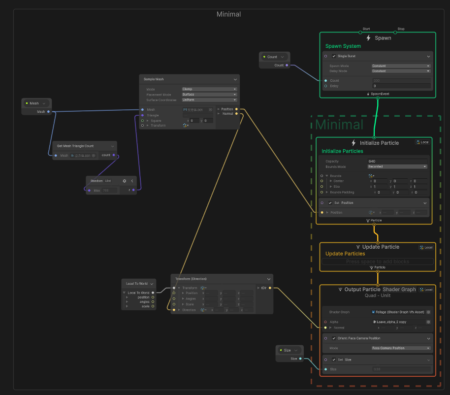
然后是渲染
附带的alpha图
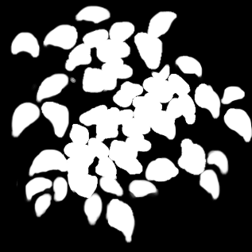
shader就半兰伯特，用最后的颜色来采样一个色带
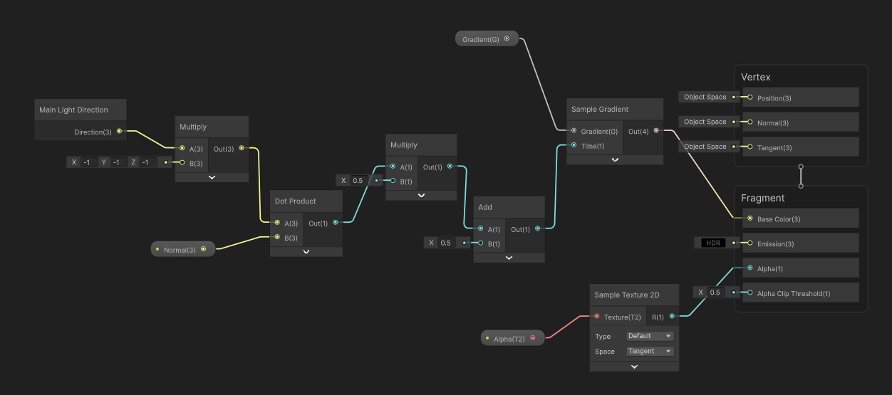
不足与改进
使用SG来写shader目前还是有很多局限的，比如这里要采样阴影就很麻烦了。
这里面向相机的方式，静态或者角度不太刁钻时都还好，但特定角度下旋转相机，叶片也会跟着转动，导致看起来不太自然。